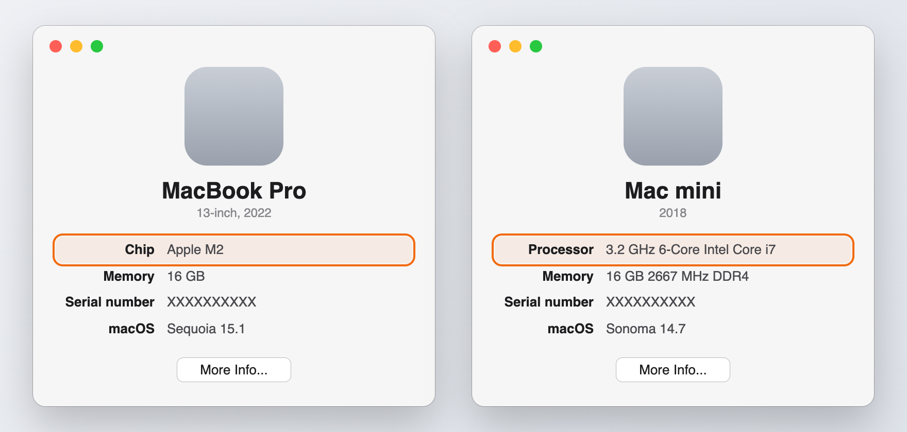
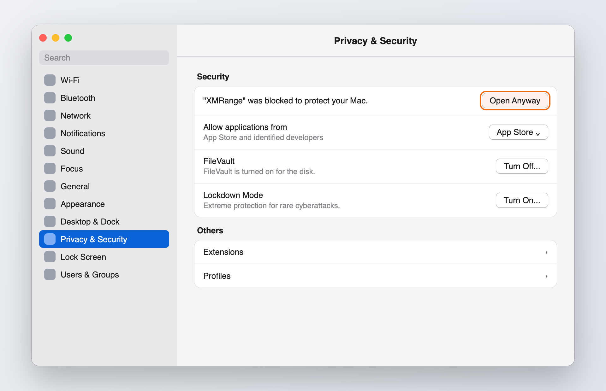

Install
1. Download
Go to the releases page: https://github.com/House-of-Helios/xmrange/releases
Each release has two zips. Pick the one that matches your Mac.
XMRange-<version>-apple-silicon.zipfor Macs with an Apple chip (M1 and later).XMRange-<version>-intel.zipfor Macs with an Intel processor.
The two apps are separate. Each one only updates to its own kind.
Which Mac do I have?
Open the Apple menu and choose About This Mac.
- If you see Chip followed by a name like "Apple M2", take apple-silicon.
- If you see Processor followed by a name like "Intel Core i5", take intel.

2. Check the download (optional)
Beside each zip sits a file with the same name ending in .sha256. It holds the zip's checksum. In Terminal, shasum -a 256 <the zip> prints the checksum of your copy. The two should match.
3. Move it to Applications
Unzip the file. Drag XMRange.app into your Applications folder.
4. Open it the first time
Apple has not signed XMRange, so macOS stops the first open. This is expected. The app is ad-hoc signed, and you can read its source.
macOS 15 and later
- Open XMRange once. macOS will refuse.
- Open System Settings, then Privacy & Security.
- Scroll to the message about XMRange and click Open Anyway.
macOS 14 and earlier
- Control-click XMRange in Applications.
- Choose Open, then confirm.

You only do this once. Later updates arrive from inside the app (see Updates).
Requirements
- Apple Silicon: macOS 11.3 or later.
- Intel: macOS 10.15 or later.
- Low Power Mode guidance needs macOS 12 or later.
- About 2.5 GB of free memory while mining.
- Only if you let XMRange run its own Monero node: about 140 GB of disk, on an APFS or Mac OS Extended drive. An external drive is fine.
Next: First run.